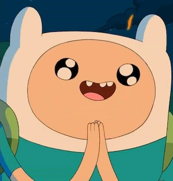
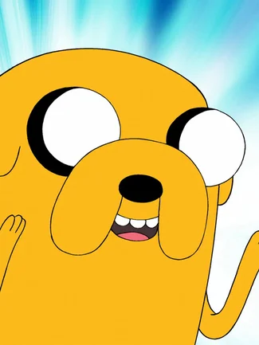
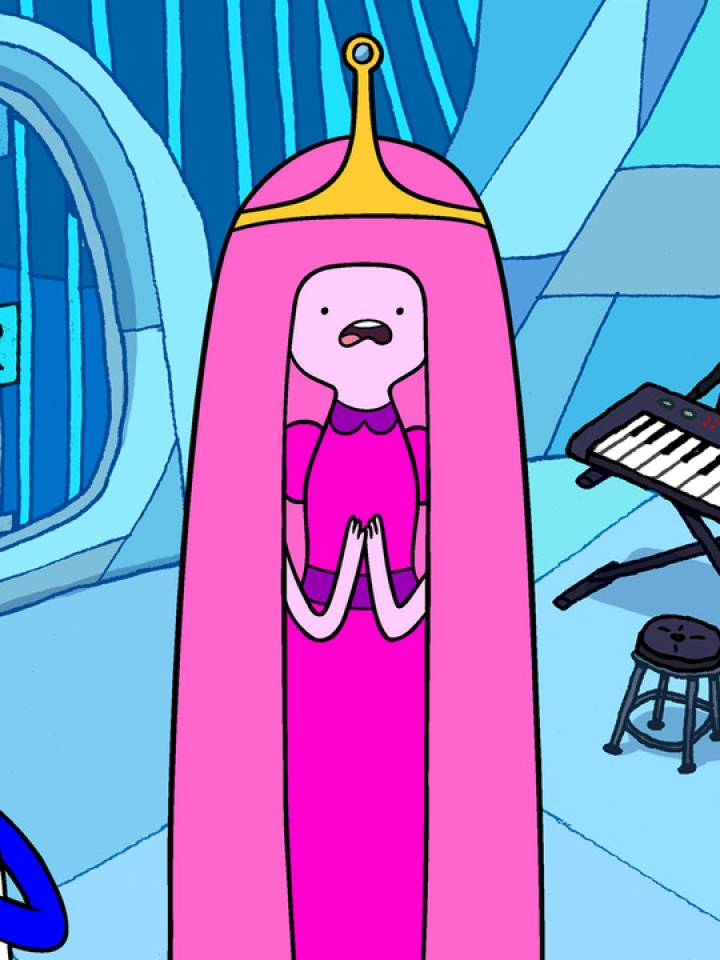
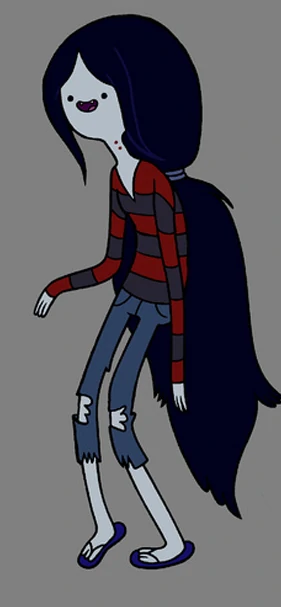
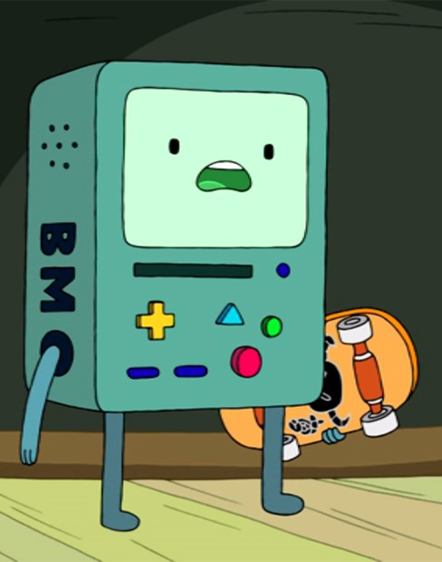
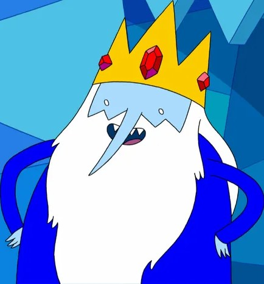
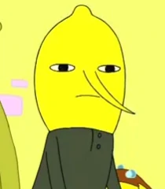
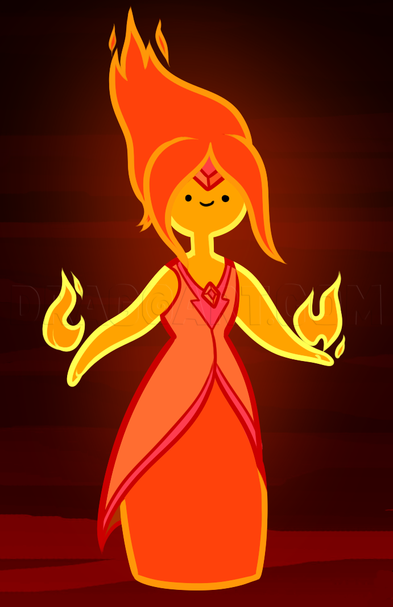

Welcome
Welcome to the Adventure Time Fanpage! Here you can learn about your favourite characters,get some cool new merch, enter competitions and get the answers to some of your burning questions. To learn some new information about the main characters, keep scrolling to the About section. If you would like to check out some new merch head over to the merchandise page and to enter our monthly competion for a unique page head to the competition page. If cou have any questions about the show check out our FAQ page. For information or suggestions about the site dont be afraid to get in touch.
Adventure Time Trailer - Distant Lands, Together Again
About The Characters
 Finn Mertens (Finn the human): Finn is one of th two main characters in Aventure Time. When he was a baby Finn got seperated from his parents (Martin Mertens & minerva Campbell) and was adopted by Jake's parents (Joshua and Margaret). The two kids were raised together as brothers and have been unseprable ever since.
 Jake (Jake the Dog): Jake is Finn's brother and best friend who has the special powers called strechy powers that allow him to take the shape of whatever he wants however he usually takes the shape of a yellow bulldog. Jake is 28 years old. Jake is in a relationship with Lady Rainicorn and they end up having 5 pups together.
 Princess Bubblegum: Princess Bubblegum ruled over Candy Kingdom until she was out voted by the King of Ooo.She was once the the love intrest of Finn but later became the girlfriend of Marceline. In a few episodes Finn tries to save Princess Bubblegum from danger but she ends up saving him. She ends up turning to science to defend herself.
 Marceline: Marceline is a 1000 year old vampire queen who only needs to consume the colour red to survive. Marceline is best known for he love of playing her electric bass guitar which she made from a family heirloom. Marceline is princess bubblegums girlfriend. She is the daughter of the demon lord Abadeer Hunson and human Elise.
 BMO: Bmo is a prototype game console/robot capable of doing many tasks to help Finn. BMO is designed to look like a Machintosh computer with Game Boy features and Atari 2600 controllers. They have an active imaginationand when left alone BMO gets up to strange activities. BMO is often seen dancing to himself.
 Ice King(Simon): THe Ice King was origanally Simon Petrikov, an archaeology professer who was cured into insanity by a crown that turned him into the Ice King. Before wearing the crown Simon was engaged to Betty Grof but she was scared away when the crown made simon go mad. Consumed by loniness he led a life of solitude.
 Earl of Lemongrab: Earl of Lemongrab is an obnoxious, paranoid and stubborn ruler of the Earldom of Lemongrab. He was created by Princess Bubblegum and was able to take the throne of the Candy Kindom due to a technicality. After being cloned by Princess Bubblegum the original earl became a tyrant and consumed his clone.
 Flame Princess: The Flame Princess (Phoebe) is the ruler of the Fire Kingdom and ex-girlfriend of Finn. When they met Phoebe was locked away in a lantern in the Fire Kingdom by her father(The Flame King). Phoebe was short tempered, had trust issues and could blow up the world with her core if she got emotional.